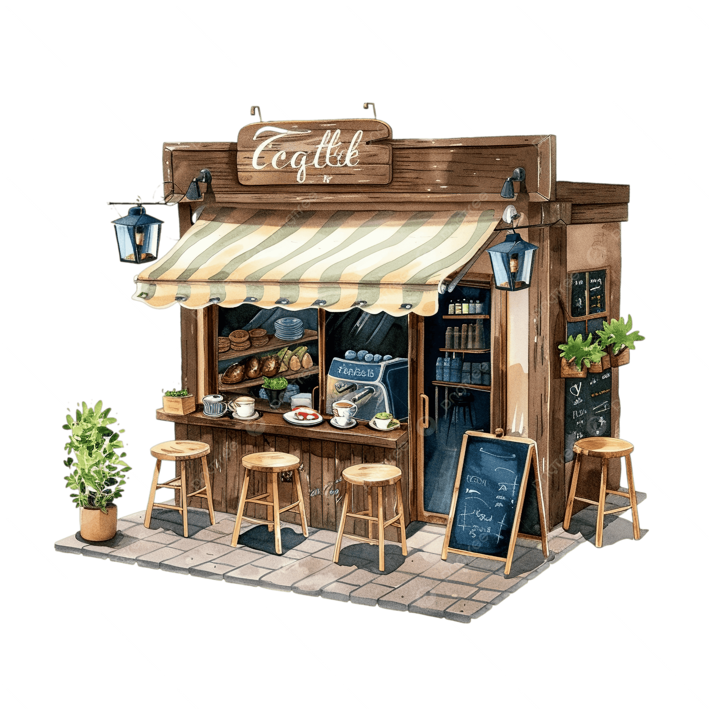

Layanan
Kami menawarkan solusi lengkap untuk mengoptimalkan pengalaman menikmati dan berbisnis kopi Anda.
Kelas Roasting & Karakter Rasa
Pelajari bagaimana mengontrol suhu dan waktu untuk memunculkan rasa buah, cokelat, atau kacang-kacangan alami dari biji kopi.
- Pengenalan karakteristik green bean.
- Teknik menyangrai (roasting profiles).
- Sesi cupping untuk evaluasi rasa.

Desain & Setup Bar Kafe
Bagi Anda yang ingin membuka kedai kopi, kami siap membantu merancang tata letak meja bar yang efisien dan estetik.
- Konsultasi pemilihan mesin espresso sesuai bujet.
- Desain alur kerja (workflow) barista yang cepat.
- Manajemen stok bahan baku.
Suplai & Kemitraan Kedai Kopi
Kami siap menjadi mitra terpercaya untuk menyuplai kebutuhan biji kopi konsisten setiap bulannya untuk bisnis Anda.
- Konsistensi Rasa demi menjaga cita rasa khas kedai Anda.
- Penawaran harga kemitraan yang kompetitif dan fleksibel sesuai dengan volume kebutuhan bulanan kafe Anda.
- Dukungan evaluasi berkala terhadap performa penjualan menu kopi dan pelatihan untuk barista mitra.